This project will examime the seasonality of inlfuenza in different regions in the world using country level influenza data.
Data was obtained from The WHO FLunet. The file was too large to handle, so the data was converted to multiple CSVs, and then function was written to read in the multiple CSV files.
file_df = tibble(file_path = list.files('./data/', pattern = '*.csv', full.names = TRUE), file_name = basename(file_path))
read_data = function(data){
read_csv(file = data, skip = 3)
}
flu_df = file_df %>%
mutate(obs = map(file_path, read_data)) %>%
unnest() %>%
janitor::clean_names() %>%
mutate(year = as.factor(year),
week = as.numeric(week),
#Date is the last day of every epi week
date = edate) %>%
#Flu data originally listed by country, combining into influenza transmission zones.
group_by(fluregion, year, week, date) %>%
summarize(cases = sum(all_inf, na.rm = TRUE),
h1 = sum(ah1, na.rm = TRUE),
h3 = sum(ah3, na.rm = TRUE),
h5 = sum(ah5, na.rm = TRUE),
h1n1 = sum(ah1n12009, na.rm = TRUE),
a_total = sum(inf_a, na.rm = TRUE),
b_total = sum(inf_b, na.rm = TRUE),
processed_samples = sum(spec_processed_nb, na.rm = TRUE),
#These variables are the proportion of processed samples that test positive for influenza a or b respectively
inf_a_prop = sum(inf_a, na.rm = TRUE)/sum(spec_processed_nb, na.rm = TRUE),
inf_b_prop = sum(inf_b, na.rm = TRUE)/sum(spec_processed_nb, na.rm = TRUE))In order to to calculate rates, population data was obtained from the World Bank. The population for each country was averaged from 2008 until 2014.
pop_df = read_excel("./data/pop_data.xls", skip = 3) %>%
janitor::clean_names() %>%
#Selecting the specific year we are reading in.
select(country, country_code, x2008:x2014) %>%
gather(key = year, value = pop, x2008:x2014) %>%
group_by(country) %>%
#Calculating the mean population for each country over the respective time period.
summarize(mean_pop = mean(pop))Join flu_df and pop_df and create new variable cases_by_100k (the number of cases per 100k in a given zone in a given epi-week).
countries = file_df %>%
mutate(obs = map(file_path, read_data)) %>%
unnest() %>%
janitor::clean_names() %>%
select(country, fluregion)
demo = left_join(countries, pop_df, by = 'country') %>%
group_by(fluregion) %>%
##Summing the average population of each country in a given zone to create a zone population.
summarize(pop = sum(mean_pop, na.rm = TRUE))
flu_df = left_join(flu_df, demo, by = 'fluregion') %>%
##creating a variable to describe the number of cases per 100,000
mutate(cases_by_100k = (cases*100000)/pop)The datafram flu_df has 16 variables and 6515 observations.
flu_df %>%
group_by(year) %>%
summarize(type_a = sum(a_total),
type_b = sum(b_total)) %>%
gather(key = type, value = count, type_a:type_b) %>%
ggplot(aes(x = year, y = count, fill = type)) +
geom_bar(stat = 'identity', position = 'dodge') +
labs(
title = 'Prevalence of Influenza Type by Year',
x = 'Year',
y = 'Positive Surveillane Samples'
)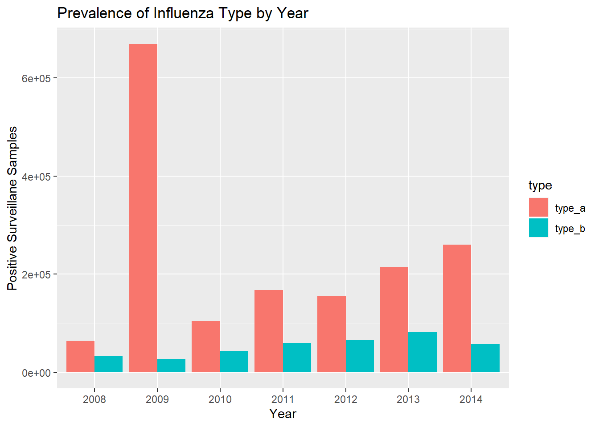
flu_df %>%
group_by(year) %>%
summarize(h1n1 = sum(h1n1),
h3 = sum(h3),
h5 = sum(h5)) %>%
gather(key = subtype, value = count, h1n1:h5) %>%
ggplot(aes(x = year, y = count, fill = subtype)) +
geom_bar(stat = 'identity', position = 'dodge') +
labs(
title = 'Prevalence of Influenza A Subtype by Year',
x = 'Year',
y = 'Positive Surveillane Samples'
)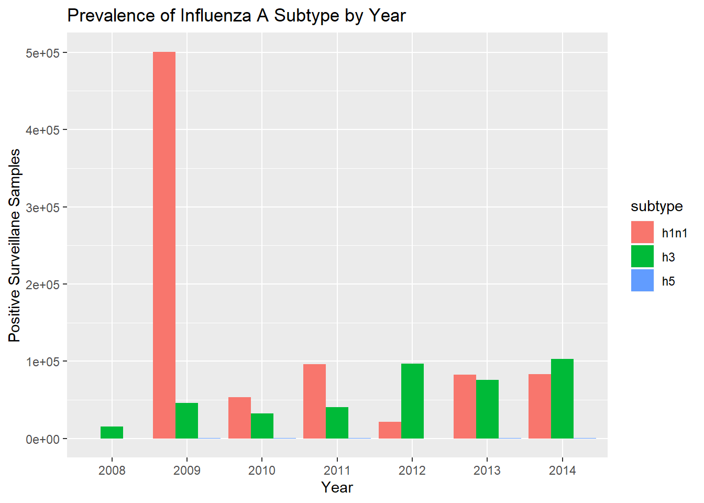 It is clear that type A is the more prominent influenza type worldwide. H1N1 and H3 are the two prominent influenza A subtypes, H5 is not found in the surveillance samples. Especially of note is the year 2009, which saw a huge spike in influenza A, specifically subtype H1N1. This is the swine flu pandemic. We see that before this spike, H3 was the dominant subtype and the novel H1N1 type was nonexistant. Interestingly, after 2009, there does not appear to be a dominant subtype, as we see a relatively even number of H1N1 and H3 cases.
flu_df %>%
ggplot(aes(x = week, y = cases_by_100k, color = year)) +
geom_line() +
facet_wrap(~ fluregion)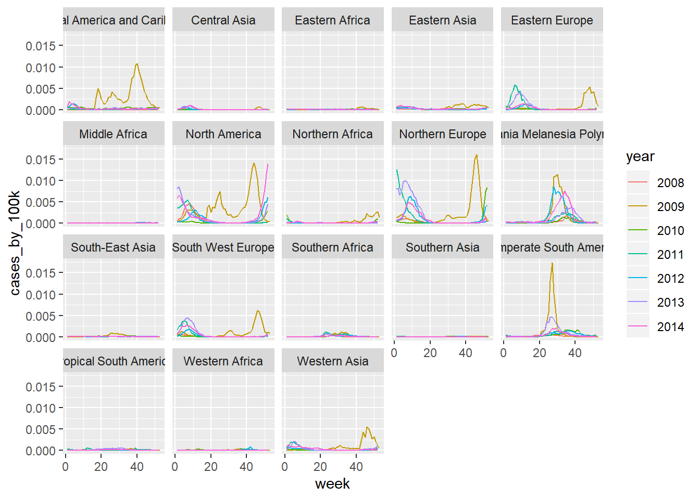
From abaove, it is seen that the seasonality of influenza infections varies depending on the transmission zone. Specifically, zones that are in the northern hemisphere have a peak number of cases at the beginning and end of each year (the flu season beginning at the end of the year and continuing into the next year), while zones in the southern hemisphere have high case counts in the middle of the year. Of note is the year 2009 (yellow line), the pandemic year. This year has a different seasonal distribution as other years and a higher peak, which are characteristics of a global flu pandemic.
Further analysis is limited to the zones with the most visible data; North America, Northern Europe, Oceania Melanesia Polynesia, and Temperate South America. The zone of Eastern Asia in the analysis because it includes China, a hotspot for the emergence of new influenza A subtypes, as well as the South Africa zone, in order to include a zone from that continent.
Below is a closer look at the distribution of influenza types and subtypes by each selected zone:
NoAm = flu_df %>%
filter(fluregion == 'North America') %>%
ggplot() +
geom_line(aes(x = week, y = h1n1, color = 'H1')) +
geom_line(aes(x = week, y = h3, color = 'H3')) +
geom_line(aes(x = week, y = h5, color = 'H5')) +
geom_line(aes(x = week, y = b_total, color = 'Type B')) +
facet_grid(~ year) +
labs(
title = 'North America',
y = 'Cases'
)
NoEu = flu_df %>%
filter(fluregion == 'Northern Europe') %>%
ggplot() +
geom_line(aes(x = week, y = h1n1, color = 'H1')) +
geom_line(aes(x = week, y = h3, color = 'H3')) +
geom_line(aes(x = week, y = h5, color = 'H5')) +
geom_line(aes(x = week, y = b_total, color = 'Type B')) +
facet_grid(~ year) +
labs(
title = 'Northern Europe',
y = 'Cases'
)
OMP = flu_df %>%
filter(fluregion == 'Oceania Melanesia Polynesia') %>%
ggplot() +
geom_line(aes(x = week, y = h1n1, color = 'H1')) +
geom_line(aes(x = week, y = h3, color = 'H3')) +
geom_line(aes(x = week, y = h5, color = 'H5')) +
geom_line(aes(x = week, y = b_total, color = 'Type B')) +
facet_grid(~ year) +
labs(
title = 'Oceania Melanesia Polynesia',
y = 'Cases'
)
TSA = flu_df %>%
filter(fluregion == 'Temperate South America') %>%
ggplot() +
geom_line(aes(x = week, y = h1n1, color = 'H1')) +
geom_line(aes(x = week, y = h3, color = 'H3')) +
geom_line(aes(x = week, y = h5, color = 'H5')) +
geom_line(aes(x = week, y = b_total, color = 'Type B')) +
facet_grid(~ year) +
labs(
title = 'Temperate South America',
y = 'Cases'
)
EaAs = flu_df %>%
filter(fluregion == 'Eastern Asia') %>%
ggplot() +
geom_line(aes(x = week, y = h1n1, color = 'H1')) +
geom_line(aes(x = week, y = h3, color = 'H3')) +
geom_line(aes(x = week, y = h5, color = 'H5')) +
geom_line(aes(x = week, y = b_total, color = 'Type B')) +
facet_grid(~ year) +
labs(
title = 'Eastern Asia',
y = 'Cases'
)
SA = flu_df %>%
filter(fluregion == 'Southern Africa') %>%
ggplot() +
geom_line(aes(x = week, y = h1n1, color = 'H1')) +
geom_line(aes(x = week, y = h3, color = 'H3')) +
geom_line(aes(x = week, y = h5, color = 'H5')) +
geom_line(aes(x = week, y = b_total, color = 'Type B')) +
facet_grid(~ year) +
labs(
title = 'Southern Africa',
y = 'Cases'
)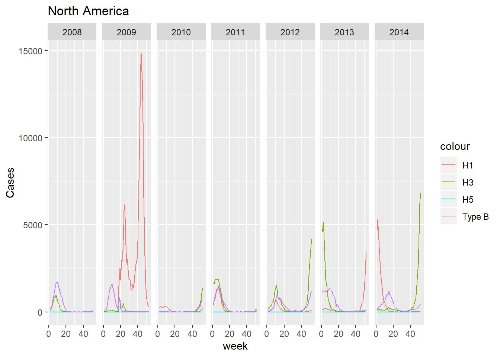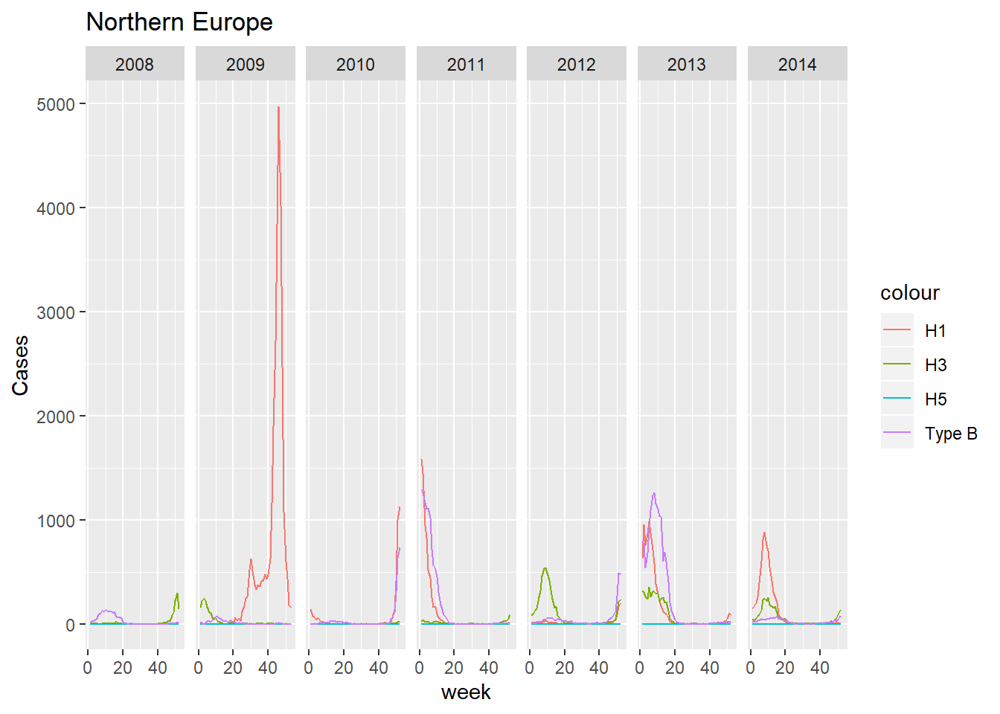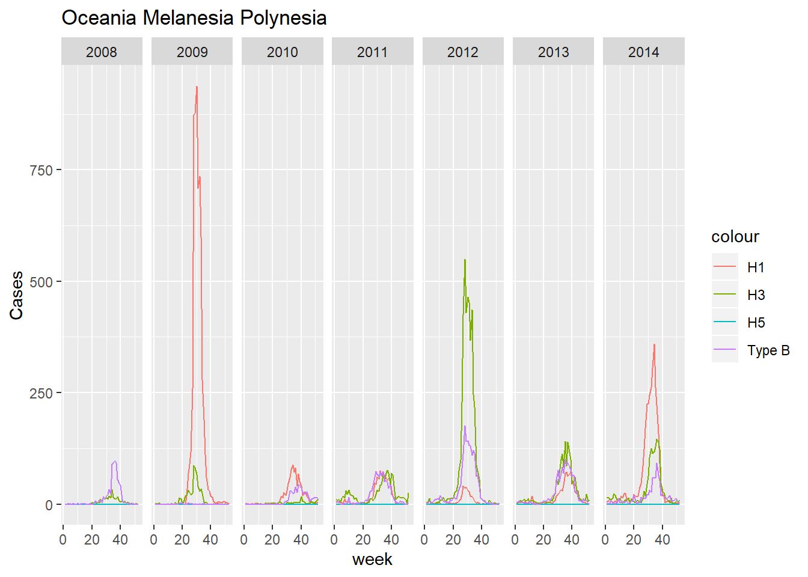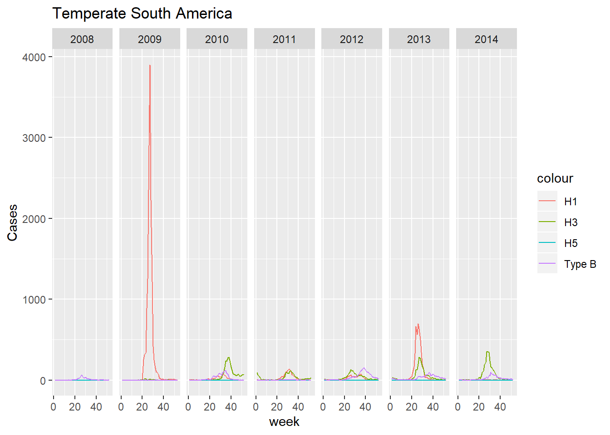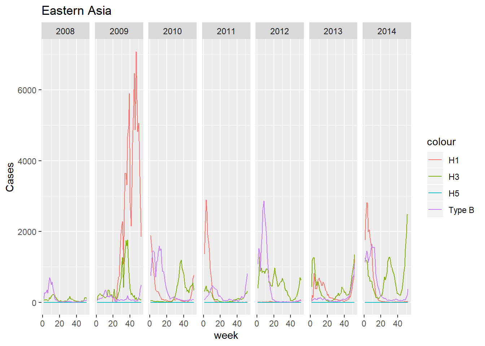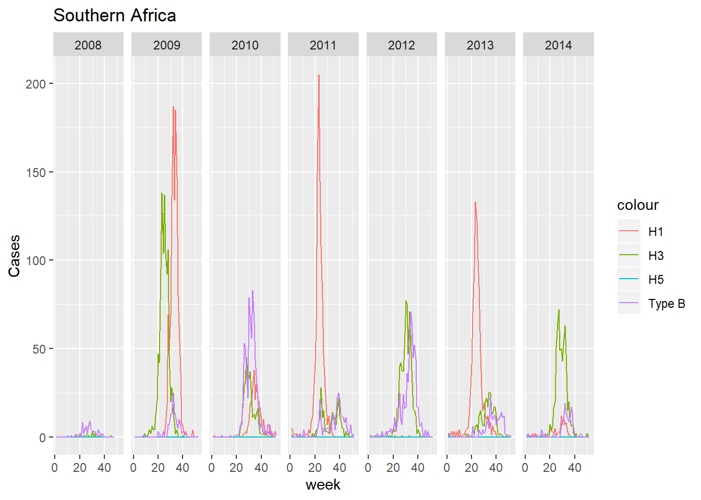
Attention should be called to the temporal location of each peak for each zone. Zones in the Northern hemisphere (like North America and Northern Europe) have peak number of cases during the end/beginning of each year, and zones in the Southern hemisphere (like South Africa, Temperate South America, and Polynesia) have peak number of cases during the middle of the year. The Eastern Asia zone stands out in that most of the peaks occur during the end/beginning of the year, however, the H3 subtype seems to peak more so during the middle of the year.
A serfling regression model is used to estimate the epidemic threshold curve (serfling regression models are used by the CDC to calculate epidemic thresholds). The year 2009 is included in this exploration, even though this will effect the resulting curve.
To test the regression model, North America data is visualized first:
epi_threshold_df = flu_df %>%
filter(fluregion %in% c('North America', 'Northern Europe', 'Oceania Melanesia Polynesia', 'Temperate South America', 'Eastern Asia', 'Southern Africa')) %>%
mutate(theta = 2*week/52,
sin_f1 = sin(theta),
cos_f1 = cos(theta),
week_2 = week^2,
week_3 = week^3,
week_4 = week^4,
week_5 = week^5)
base_fit = epi_threshold_df %>%
filter(fluregion == 'North America') %>%
lm(cases_by_100k ~ week + week_2 + week_3 + week_4 + week_5 + sin_f1 + cos_f1, data = ., na.action = na.exclude)
base_pred = epi_threshold_df %>%
mutate(inf_a_prop = 0) %>%
predict(base_fit, newdata = ., se.fit = TRUE,
interval = 'prediction', level = 0.90)
flu_fitted = epi_threshold_df %>%
add_column(y0 = base_pred$fit[,1], y0_ul = base_pred$fit[,3])
flu_fitted %>%
filter(fluregion == 'North America') %>%
ggplot(aes(x = date, y = cases_by_100k)) +
geom_line() +
geom_line(aes(x = date, y = y0_ul, color = 'Epidemic Threshold')) +
labs(
title = 'Cases per 100k with Epidemic Threshold',
x = 'Year',
y = 'Cases per 100k'
)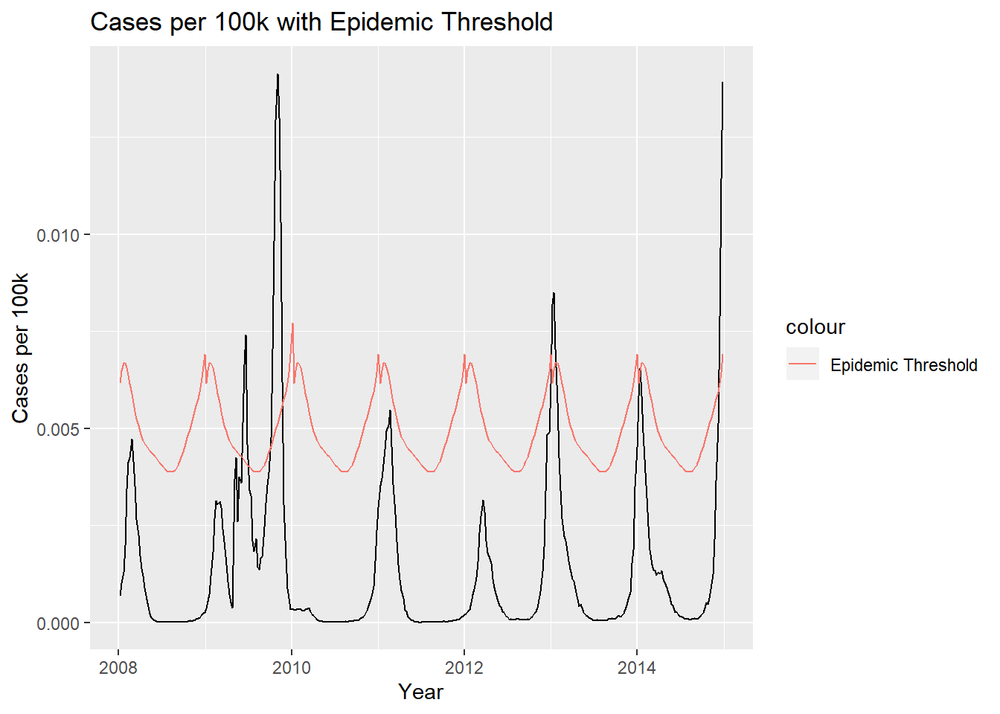
The regression uses cases per 100K as opposed to a simple case count as an outcome as it is easier to compare zones with different populations. The threshold is 1.64 standard deviations above the estimated number of cases, which is the standard the CDC uses.
Writing a function in order to run the regression on the other zones of interest:
flu_lm = function(df){
function_fit = df %>%
lm(cases_by_100k ~ week + week_2 + week_3 + week_4 + week_5 + sin_f1 + cos_f1, data = ., na.action = na.exclude)
function_pred = df %>%
mutate(inf_a_prop = 0) %>%
predict(function_fit, newdata = ., se.fit = TRUE,
interval = 'prediction', level = 0.90)
function_fitted = df %>%
add_column(y0 = function_pred$fit[,1], y0_ul = function_pred$fit[,3])
}
serfling_df = epi_threshold_df %>%
group_by(fluregion) %>%
nest() %>%
mutate(map(data, ~flu_lm(.x))) %>%
unnest() serfling_df %>%
ggplot(aes(x = date, y = cases_by_100k)) +
geom_line() +
geom_line(aes(x = date, y = y0_ul, color = 'Epidemic Threshold')) +
facet_wrap(~fluregion) +
labs(
title = 'Cases per 100k with Epidemic Threshold',
x = 'Year',
y = 'Cases per 100k'
)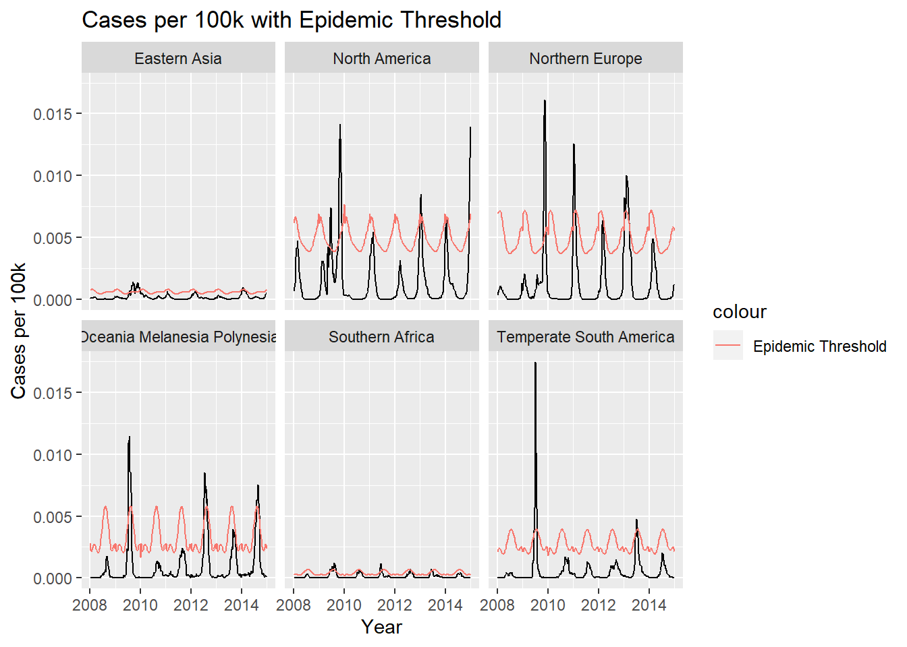
As in the North America example, the thresholds follow the seasonality of each respected region. When epidemics are declared varies by each region and is dictated by the history of influenza activity.